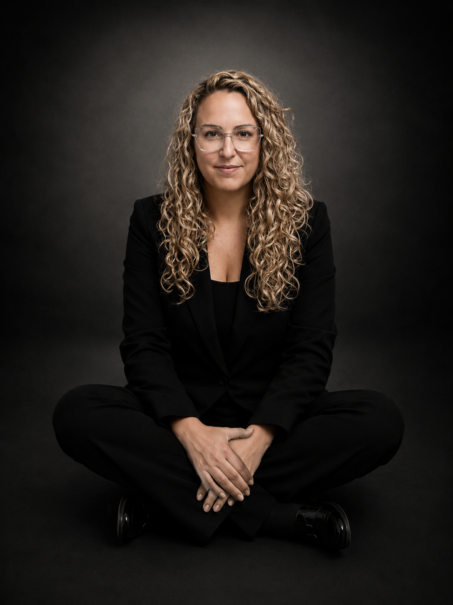

Aprende a interpretar 3 cartas juntas y a construir una lectura con sentido.
Primera edición del taller — grupo reducido para poder practicar contigo en directo.
💬 ¿Dudas? Escríbenos por WhatsAppa>¿Has empezado a aprender Tarot pero cuando tienes varias cartas delante no sabes cómo relacionarlas?
Una cosa es conocer el significado de una carta y otra muy distinta saber construir una lectura con varias cartas.
Una experiencia práctica de 1h30 para empezar a leer las cartas relacionándolas entre sí, no simplemente memorizando significados.
El Loco, 2 de Oros y 3 de Bastos. Trabajaremos su significado, simbolismo y aplicación práctica.
Cómo dejar de interpretar cada carta de forma aislada y empezar a construir una narrativa con sentido entre varias cartas.
Practicarás en directo con El Loco, el 2 de Oros y el 3 de Bastos, siguiendo la estructura:
Pasado → Presente → Futuro

Una sesión en directo por Zoom con Fátima Domingo, instructora de Tarot en MENTIS. Además de explicar cada carta, practicaréis juntas una tirada sencilla con El Loco, el 2 de Oros y el 3 de Bastos, construyendo la narrativa en directo.
"Soy Fátima Domingo, llevo 10 años leyendo tarot. Este es mi primer taller en directo dentro de MENTIS, y quiero enseñarte exactamente cómo construyo yo una lectura — no solo memorizar significados sueltos."
Una guía de referencia para que puedas volver a consultar las tres cartas trabajadas y practicar tu propia tirada después del taller.
La tendrás como material de apoyo para seguir practicando después del taller.
37 € incluye: 1h30 de taller en directo + práctica guiada + Mini Guía descargable — menos de lo que cuesta una consulta de tarot individual.
¿Necesito saber algo de tarot antes?
No, empezamos desde cero con las tres cartas trabajadas en el taller.
¿Y si no puedo asistir en directo?
Sí, el taller queda grabado y se envía a las alumnas inscritas.
¿Cómo se paga?
Pago único de 37 € a través de Whop, con tarjeta.
37 € incluye: 1h30 de taller en directo + práctica guiada + Mini Guía descargable — menos de lo que cuesta una consulta de tarot individual.
Reservar mi plaza →Primera edición del taller — grupo reducido para poder practicar contigo en directo.
💬 ¿Dudas? Escríbenos por WhatsAppa>